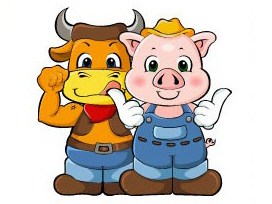

[식용 동물의 대표주자. 소와 돼지 (닭이 서운해 하겠군)]
'먹이사슬의 근본은 약육강식에서 이루어진다'
라고 하는것은 누가 굳이 증명하거나 부르짖지 않아도 인정되고 있는 정설이다.
잡아먹고 잡아먹히는 관계는 힘의 강약에 의해 결정된다는거다.
그런데 후배 전모군은 다르게 생각하고 있었다.
'말이 통하지 않으니까 잡아먹을 수 있는거예요'
전모군의 주장에 따르면. 약자의 고기를 강자가 먹기 위해서는 둘 사이에 직접적인 의사소통이 이루어져서는 안된다는 것이다.
즉, 강하다는 것 만으로는 부족하고, 약자와 말이 통하면 안된다는거다.
소나 돼지가 인간의 언어로 '살려주세요' 라고 말할 수 있다고 하면.
인간이 절대로 소와 돼지를 잡아먹고 살지는 못했을것이라는 주장이다.
과연 어떻게 될까?
--
여기서부터는 그냥 내 생각..
인간의 언어란 것은 단순히 구강구조상의 특징으로 얻어진 산물이 아니다.
언어를 구사한다는 것은 고도의 학습력과 지능을 갖고 있다는 증거라고 볼 수 있다.
따라서 언어를 사용한다는 것은 인간과 비슷한 수준의 지적 생명체라는 것을 의미하며.......
안타깝게도 전모군의 주장을 반박하는 이 논리는 더 이어갈 수가 없다.
인간은 지구상에서 유일한 지적생명체(인간의 관점에서는)이기 때문에 또다른 지적 생명체와의 조우에 대해서는
어떤 사례도 존재하지 않기 때문이다.
저능하지만 지적생명체이므로 살육의 대상이 되어서는 안된다. 라던가
언어는 어차피 짐승에게도 존재한다. 인간의 언어를 구사할 수 있다는 것 만으로 지적생명체라고 부를 순 없다. 라던가
과연 인간들이
외형이 인간이 아닌... 소나 돼지 같은 네발짐승이거나 흉물스러운 형태의 생명체일지라도 인간의 언어를 구사할 수
있다는 이유만으로 그들에게 인격과 같은 자격을 부여할까?
아니면 구관조나 앵무새처럼 동물원의 구경꺼리로 길러질까?
맛과 영양이 풍부하다면(....) 식용으로 사육될까?
별로 의미 없어 보이던 위의 그림을 다시 보자.
근육을 자랑하며 입맛을 다시는 소. 엄지손가락을 내밀어 자신의 맛이 일품임을 내세우는 돼지.
역시 모르겠다...